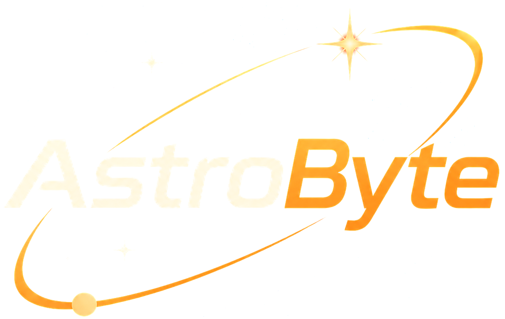

NOVA CARTA!

Desvie dos asteroides e pegue as estrelas douradas. Cada estrela abre uma carta com um objeto real do espaço.
Dica: deite o celular para enxergar os asteroides mais cedo.
Nada fica salvo: ao recarregar a página, tudo recomeça.
NOVA CARTA!